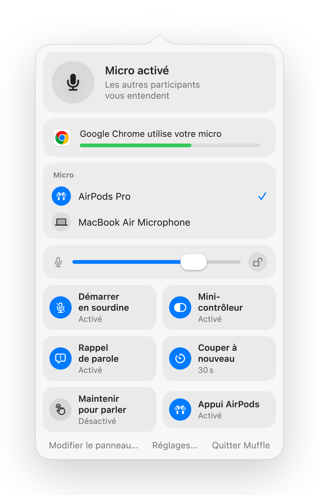

Couper le micro pour les appels web sur Mac
De plus en plus d'appels vidéo se déroulent dans un navigateur : Google Meet, Teams sur le web, bureaux virtuels comme SoWork ou Gather, Whereby, Jitsi. Chacun dispose de ses propres commandes, actives seulement si l'onglet reste affiché.
De plus, les navigateurs ignorent l'appui sur la tige des AirPods sur Mac. Muffle intercepte ce geste ou utilise un raccourci global pour couper le micro sur tous vos onglets à la fois.
Gérer la sourdine de n'importe quel appel web
- 1
Installez Muffle et choisissez Autoriser l'accès au micro.
- 2
Lancez votre appel dans l'onglet de votre navigateur.
- 3
Appuyez sur la tige de vos AirPods ou faites Contrôle-Option-M pour couper le micro, depuis n'importe quelle app ou fenêtre.
- 4
Surveillez l'icône dans la barre des menus : rouge signifie que le micro est coupé.

- Les espaces de télétravail virtuels gardent le micro ouvert pendant des heures. Activez le mini-contrôleur flottant pour toujours connaître votre état.
- La notification « Vous êtes en sourdine » vous avertit quand vous commencez à parler alors que le micro est coupé.
Questions fréquentes
Pourquoi l'appui sur les AirPods ne fonctionne-t-il pas dans Chrome ?
Chrome ne prend pas en charge le geste de sourdine des AirPods de macOS pour les pages web. Muffle reçoit l'appui à sa place et coupe directement le micro.
L'application fonctionne-t-elle avec SoWork et Gather ?
Oui. Tout site web utilisant votre micro est rendu silencieux dès que Muffle désactive le microphone.